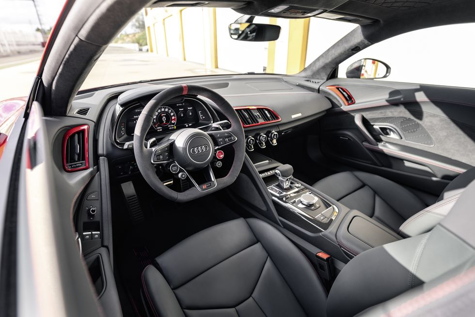

The 602-hp GT is the most powerful rear-drive Audi ever and a final sendoff to the mid-engine R8.
Well, this is finally the end. Both for Audi's 5.2-liter V-10 screamer—and V-10s in general—as well as its mid-engine R8 supercar. It seems 2023 is the last model year, and this limited-edition R8 GT, which lives among the rest of the R8 coupe and spyder lineup, the last variant.
There will only be 333 special-edition R8 GT RWD coupes available, distinguishable from other R8s through black badges including a new R8 GT emblem. For wind-tunnel-tested stability and increased car-show cred, the GT comes with a glossy carbon-fiber front splitter, side spats, rear scoops, a diffuser, and a high gooseneck rear wing.
The GT's $253,290 price may seem expensive, as it's $91,895 more than a regular 2023 rear-drive R8 coupe. But after checking all the option boxes that are included on the GT, the premium drops to $53,900.
Not only are the badges and aero elements menacingly midnighted, but should you peer through the rear hatch at the V-10 engine, even the intake manifold on the GT is black. Basically, it looks like the ZL1 1LE of R8s.
Inside, it reflects the first-generation R8 GT with a black and red interior, including red seatbelts. Floor mats and seats declare the GT’s special status, and owners can figure out their place in the order line with a sequential special edition build number embedded in the carbon-fiber center console.
VEHICLE TYPE
mid-engine, rear-wheel-drive, 2-passenger, 2-door coupe
BASE PRICE
$253,290
ENGINE
DOHC 40-valve V-10, aluminum block and heads, port and direct fuel injection
POWER
602 hp @ 8000 rpm
TORQUE
413 lb-ft @ 6400 rpm
TRANSMISSION
7-speed dual-clutch automatic
PERFORMANCE (C/D EST)
Zero to 60 mph: 3.1 sec
Zero to 100 mph: 6.6 sec
Standing ¼-mile: 11.0 sec
Top speed: 199 mph
EPA FUEL ECONOMY (C/D EST)
Combined/city/highway: 17/14/21 mpg